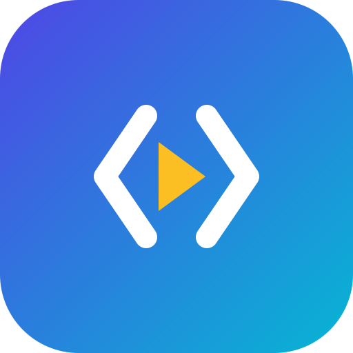

Turn codebases and technical docs into narrated tutorial videos.
CodeDirector is a Windows desktop application for solo developers, educators, and open-source maintainers. It takes a codebase and its documentation, plans a step-by-step programming lesson, replays the coding steps deterministically inside Visual Studio Code and a browser, and then adds AI voice-over, camera moves, a cursor overlay, and subtitles to render a finished programming-tutorial video, so a creator can produce a YouTube-style coding tutorial without recording their screen or speaking on camera.
CodeDirector's core workflow is local video creation. The user selects a project, writes or imports lesson notes, generates a tutorial plan, previews the scripted coding sequence, renders the video on their own computer, and can then save the file locally. Publishing to YouTube is an optional final step and is never required to create or export a video.
CodeDirector requests YouTube access only for its optional
Publish to YouTube feature. When the user connects their Google
account, CodeDirector requests the YouTube Data API v3 scope
https://www.googleapis.com/auth/youtube.upload.
CodeDirector runs as a desktop app with no CodeDirector server or backend receiving Google user data. The Google sign-in happens in the user's own browser, and upload traffic goes directly between the user's computer and Google's official YouTube APIs over HTTPS.
The same optional Publish feature can post the finished video to the
creator's own TikTok account through TikTok's official Content Posting API
(video.publish scope), following the identical
sign-in-in-your-own-browser, tokens-stored-locally model.